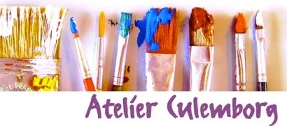
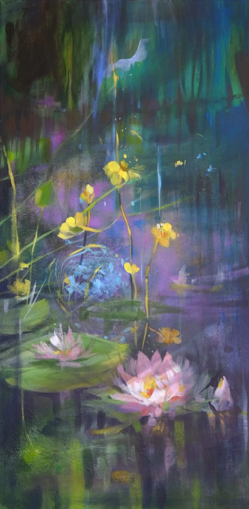
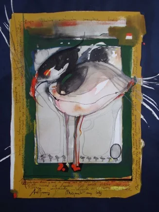

Atelier in Culemborg
Welkom bij
Atelier Culemborg
Bij Atelier Culemborg wordt met veel aandacht en onder deskundige begeleiding gekeken naar uw persoonlijke wensen.

Het atelier
Thema’s en technieken
Er zijn vele thema’s mogelijk, bijvoorbeeld: landschappen, bloemen, stillevens, abstracte vormen, portretten van mensen en huisdieren.
Er wordt met verschillende technieken gewerkt, waaronder: aquarel, acryl, olieverf, pastel, inkt, houtskool en gemengde technieken.
U werkt in uw eigen tempo.

Lessen
Voor wie zijn de lessen?
Kinderen, jongeren en volwassenen, elk in hun eigen tempo.

Spelenderwijze komen de kinderen hier met kunst in aanraking.

Voor jongeren die de wereld van kleuren, vormen en verschillende technieken willen ontdekken.

In uw eigen tempo werken aan de onderwerpen en technieken die bij u passen.
Technieken
Kies een techniek
Van tekenen en aquarel tot olieverf en gemengde technieken: u kiest de techniek waarmee u werkt.

Stap voor stap leren hoe je een dier, mens of landschap tekent.

Alles over aquarelverf, penselen, doseren met water en papier opspannen.

Levendige kleuren en alle effecten van acrylverf, van wassing tot dekkende laag.
De vele aspecten van olieverf: opbouw, kleurmenging, sfeer en nat-op-nat.

Zeer levendige kleuren en het spel tussen licht en donker, laag over laag.

Vele teken- en schildertechnieken in korte tijd uitproberen.
Over mij
Persoonlijke begeleiding
In mijn eigen atelier in Culemborg geef ik teken- en schilderlessen aan kinderen, jeugd en volwassenen. Cursisten kunnen kiezen uit verschillende thema’s: landschappen, dieren, portretten en striptekenen.
Plezier in tekenen en schilderen, maar ook goede begeleiding staan bij mij altijd centraal.

Exposities
Exposities van Atelier Culemborg
Werk van cursisten was de afgelopen jaren te zien in het oude stadhuis, de openbare bibliotheek en de kerkzaal in Culemborg.


Contact
Goed bereikbaar
Het atelier ligt op loopafstand van NS- en busstation Culemborg.
Goed bereikbaar vanuit Geldermalsen, Buurmalsen, Tricht, Tiel, Houten en Utrecht!
- AdresAchter ’t Zand 87, 4103 XN Culemborg
- Telefoon0345-522241
- E-mailinfo@atelierculemborg.nl
Aanmelden of een vraag?
Bel of mail gerust voor lestijden, kosten en beschikbaarheid. Een kennismaking in het atelier is mogelijk.